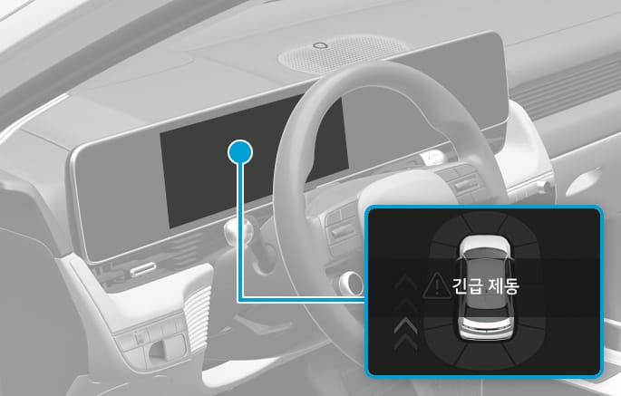

후측방 충돌방지 보조 (BCA)
일정 속도 이상으로 주행 중 후측방의 차량을 인식하여 충돌 위험이 판단되면 경고등, 경고음, 경고문 등으로 알려줍니다. 또한 전진 출차 시 충돌 위험이 높아지면 충돌하지 않도록 제동을 도와줍니다.
-
BCA는 Blind-Spot Collision-Avoidance Assist의 약자입니다.
-
후측방 충돌방지 보조가 작동하는 경우에는 사이드 미러(또는 DSM 화면)의 경고등, 경고음, 경고문 또는 클러스터 주행 보조 뷰, 헤드업 디스플레이 및 핸들 진동으로 경고 및 긴급 제동을 알립니다.

2C_SideMirrorWaringLamp

2C_BCABrakingControl
-
클러스터 사양 또는 테마에 따라 클러스터에 표시되는 이미지나 색상이 다를 수 있습니다.